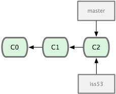
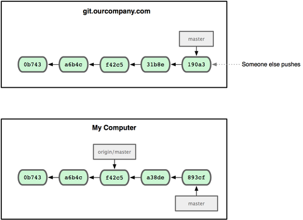

Proceso secuencial
En este ejemplo no hay solapamiento

| z, ? | toggle help (this) |
| space, → | next slide |
| shift-space, ← | previous slide |
| d | toggle debug mode |
| ## <ret> | go to slide # |
| c, t | table of contents (vi) |
| f | toggle footer |
| r | reload slides |
| n | toggle notes |
| p | run preshow |
| P | toggle pause |


Ayudantes:

TTPS - Opcion
Ruby por Christian A. Rodriguez se encuentra bajo
una Licencia
Creative Commons Atribución-NoComercial-CompartirIgual 3.0 Unported.


Pero... ¿Cómo planificar sin saber qué hacer?

¿Si deseamos obtener validaciones frecuentes con el cliente?
¿Y con pruebas de regresión entre iteraciones?

Se requieren unos 40 minutos para realizar la actividad. Se trata de una sencilla e interesante actividad para ilustrar el concepto de Deuda Técnica. Pero más allá de dicho propósito, esta actividad permite motivar al inicio de un curso, lo diferente que es una estrategia de trabajo en equipo respecto de una estrategia de trabajo individual. Ver más en https://github.com/TTPS-ruby/capacitacion-ruby-ttps/blob/master/actividades/01-agiles/hard_choices.md

Para cada caso de uso implementado en la iteración, sus actividades se encadenan en una mini cascada

Estamos descubriendo formas mejores de desarrollar software tanto por nuestra propia experiencia como ayudando a terceros. A través de este trabajo hemos aprendido a valorar:
Individuos e interacciones sobre procesos y herramientas Software funcionando sobre documentación extensiva Colaboración con el cliente sobre negociación contractual Respuesta ante el cambio sobre seguir un plan
Esto es, aunque valoramos los elementos de la derecha, valoramos más los de la izquierda.
Nuestra mayor prioridad es satisfacer al cliente mediante la entrega temprana y continua de software con valor.
Aceptamos que los requisitos cambien, incluso en etapas tardías del desarrollo. Los procesos Ágiles aprovechan el cambio para proporcionar ventaja competitiva al cliente.
Entregamos software funcional frecuentemente, entre dos semanas y dos meses, con preferencia al periodo de tiempo más corto posible.
Los responsables de negocio y los desarrolladores trabajamos juntos de forma cotidiana durante todo el proyecto.
Los proyectos se desarrollan en torno a individuos motivados. Hay que darles el entorno y el apoyo que necesitan, y confiarles la ejecución del trabajo.
El método más eficiente y efectivo de comunicar información al equipo de desarrollo y entre sus miembros es la conversación cara a cara.
El software funcionando es la medida principal de progreso.
Los procesos Ágiles promueven el desarrollo sostenible. Los promotores, desarrolladores y usuarios debemos ser capaces de mantener un ritmo constante de forma indefinida.
La atención continua a la excelencia técnica y al buen diseño mejora la Agilidad.
La simplicidad, o el arte de maximizar la cantidad de trabajo no realizado, es esencial.
Las mejores arquitecturas, requisitos y diseños emergen de equipos auto-organizados.
A intervalos regulares el equipo reflexiona sobre cómo ser más efectivo para a continuación ajustar y perfeccionar su comportamiento en consecuencia.
SCRUM se basa en lo que se conoce como Sprints
Un sprint concentra el esfuerzo durante un período corto de tiempo hacia metas prefijadas

Las dos primeras preguntas ofrecen a los participantes una visión global del avance del proyecto. La tercera, sirve para solucionar problemas

$ git init
$ git clone https://github.com/rails/rails.git


Objetivo
gitActividad
alumnos/

$ git checkout testing

$ vi test.rb
$ git commit -am 'made a change'

$ git checkout master

$ vi test.rb
$ git commit -am 'made other changes'





$ git checkout master
$ git merge hotfix


$ git checkout master
$ git merge iss53





$ git checkout experiment
$ git rebase master


cancionero/Lecturas
Juegos:
Ruby is designed to make programmers HAPPY


NombreDeClaseOModulo
CONSTANTE
@nombre_de_atributo
@@atributo_de_clase
$variable_global
nombre_de_metodo
metodo_peligroso!
metodo_que_pregunta?"Aprendiendo ruby".length["Mateo", "Lola", "Lihue", "Clio"].sort-100.absnil.nil?1.object_idnil.object_id([1,2,3] + [4,5,6]).last3
3.14
1_999_235_243_888 == 19992352438880b1000_1000 #Binario => 132
010 # Octal => 8
0x10 # Hexadecimal => 16'sin interpolar'
"Interpolando: #{'Ja'*3}!"%q/Hola/
%q!Chau!
%Q{Interpolando: #{3+3}}
un_string = <<EOS
Este es un texto
de mas de una linea
que termina aqui
EOS
un_string.upcase:action, :line_items, :+:uno.object_id # siempre devolverá lo mismo
"uno".object_id # siempre devolverá diferente
['Hola', 'Chau]
%w(Hola Chau #{2+2}) # sin interpolar
%W(Hola Chau #{2+2}) # interpolando
[1,2,3,4]# Versión 1.8
{
:nombre => 'Christian',
:apellido => 'Rodriguez'
}
# Versión > 1.8
{
nombre: 'Christian',
apellido: 'Rodriguez'
}0..1
0..10
"a".."z"
"a"..."z"("a"..."z").to_a(1..10) === 5 # => true
(1..10) === 15 # => false
(1..10) === 3.1 # => trueuno = lambda { |n| n * 2 }
dos = ->(n, m){ n * 2 + m }
tres = ->(n, m=0){ n * 2 + m}
# Entonces
uno.call 2 # => 4
dos.call 2,3 # => 7
tres.call 2 # => 410 - 210.send :-, 2[1,2,3] - [1]a = 3.14estado = nil
#...
face = case estado
when "Feliz" then ":)"
when "Triste" then ":("
else ":|"
enddef foo
"bar"
end
# => nilNotar que la definición de un método retorna nil
Su ejecución retorna "bar"
3.times do |i|
puts i
end
# 0
# 1
# 2
# => 3 (retorna el 3 que recibe .times)
3.times { |x| puts x }(1..10).select { |n| n.even? }
# o lo que es igual:
(1..10).select(& :even?)(1..10).map { |n| n*2 }
# o lo que es igual:
(1..10).collect { |n| n*2 }(1..100).reduce { |sum,n| sum + n }
# o lo que es igual:
(1..100).reduce(:+)# La formula de verificacion es: n*(n-1)/2
100*101/2File.open('my.txt').each do |line|
puts line if line =~ /ruby/
endSi veo un pájaro que camina como pato, nada como pato y hace "cuack" como pato, entonces llamaré a ese pájaro un pato
public interface DuckLike {
Cuack cuack();
}
//...
public void doSomething(DuckLike d) {
d.cuack();
// ...
}import java.lang.reflect.InvocationHandler;
import java.lang.reflect.InvocationTargetException;
import java.lang.reflect.Method;
import java.lang.reflect.Proxy;
public class DuckTyping {
interface Walkable { void walk(); }
interface Swimmable { void swim(); }
interface Quackable { void quack(); }
public static void main(String[] args) {
Duck d = new Duck();
Person p = new Person();
as(Walkable.class, d).walk(); //duck can walk()
as(Swimmable.class, d).swim(); //duck can swim()
as(Quackable.class, d).quack(); //duck can quack()
as(Walkable.class, p).walk(); //person can walk()
as(Swimmable.class, p).swim(); //person can swim()
// Gives Runtime Error
as(Quackable.class, p).quack(); //person can't quack()
}
//... @SuppressWarnings("unchecked")
static <T> T as(Class<T> t, final Object obj) {
return (T) Proxy.newProxyInstance(t.getClassLoader(),
new Class[] {t},
new InvocationHandler() {
public Object invoke(Object proxy,
Method method,
Object[] args) throws Throwable {
try {
return obj.getClass()
.getMethod(method.getName(),
method.getParameterTypes())
.invoke(obj, args);
} catch (NoSuchMethodException nsme) {
throw new NoSuchMethodError(
nsme.getMessage());
} catch (InvocationTargetException ite) {
throw ite.getTargetException();
}
}
});
}
}
//....class Duck {
public void walk() {
System.out.println("I'm Duck, I can walk...");
}
public void swim() {
System.out.println("I'm Duck, I can swim...");
}
public void quack() {
System.out.println("I'm Duck, I can quack...");
}
}
class Person {
public void walk() {
System.out.println("I'm Person, I can walk...");
}
public void swim() {
System.out.println("I'm Person, I can swim...");
}
public void talk() {
System.out.println("I'm Person, I can talk...");
}
}class Duck
def quack
puts "Quaaaaaack!"
end
def feathers
puts "The duck has white and gray feathers."
end
end
class Person
def quack
puts "The person imitates a duck."
end
def feathers
puts "The person takes a feather from the ground"
end
end
def in_the_forest duck
duck.quack
duck.feathers
end
donald = Duck.new
john = Person.new
in_the_forest donald
in_the_forest john(1..10).even # da error: even no existe
class Range
# Agregamos even a Range
def even
self.select(& :even?)
end
end
(1..10).even # ahora no da error
# => [2,4,6,8,10]module MyAPI
class User
...
end
def self.configuration
...
end
end
user = MyAPI::User.new
puts MyAPI::configurationComo las interfaces, pero con comportamiento
module MyLog
def log(msg)
puts "Log: #{msg}"
end
endclass String; include MyLog; end
"hola".log("pepe")
#Log: pepe
# => nil cd para cambiar de versión de ruby~/.rbenv
$ git clone https://github.com/sstephenson/rbenv.git ~/.rbenv
~/.rbenv/bin a $PATH
$ echo 'export PATH="$HOME/.rbenv/bin:$PATH"' >> ~/.bash_profile
En ubuntu, hacer el echo en .profile en vez de .bash_profile
rbenv init al shell para habilitar los shims y el autocompletado
$ echo 'eval "$(rbenv init -)"' >> ~/.bash_profile
$ exec $SHELL -l
~/.rbenv/plugins
$ git clone https://github.com/sstephenson/ruby-build.git ~/.rbenv/plugins/ruby-build
~/.rbenv/plugins
$ git clone https://github.com/sstephenson/rbenv-gem-rehash.git ~/.rbenv/plugins/rbenv-gem-rehash
~/.rbenv/plugins
$ git clone https://github.com/rkh/rbenv-update.git ~/.rbenv/plugins/rbenv-update
rbenv versions muestra las versiones instaladas de ruby (con un * la versión actual)rbenv global muestra o setea la versión global de ruby
$ rbenv global # muestra la versión global
$ rbenv global 2.0.0-p247 # setea la versión 2.0.0-p247 como global
rbenv local identico al comando anterior, pero para el directorio actual
rbenv install instala rubies! (con -l listamos todas las versiones disponibles)
Luego de haber recibido una dosis de Ruby ya conocemos un poco sobre la sintáxis de este lenguaje
Para entender mejor los objetos, vamos a hacerlo mediante un ejemplo -tomado del libro Programming Ruby (Pick Axe):
Reventa de libros usuados que realiza control de stock semanalmente
Mediante lectores de códigos de barra se registra cada libro en las bibliotecas. Cada lector, genera un archivo separado por comas (CSV) que contiene una fila para cada libro registrado.
Cada fila contiene entre otros datos: ISBN del libro y precio. Un extracto del archivo sería:
"Date","ISBN","Amount"
"2008-04-12","978-1-9343561-0-4",39.45
"2008-04-13","978-1-9343561-6-6",45.67
"2008-04-14","978-1-9343560-7-4",36.95BookInStockRecordamos que los nombres de las clases deben comenzar con mayúsculas, los métodos con minúscula
class BookInStock
endLo probamos:
a_book = BookInStock.new
another_book = BookInStock.newEn el ejemplo anterior:
BookInStock. Lo solucionamos obligando que la inicialización indique aquellos datos que distinga al libro
class BookInStock
def initialize(isbn, price)
@isbn = isbn
@price = Float(price)
end
endinitialize es especiale en Ruby new, Ruby aloca memoria para alojar un objeto no
inicializado y luego invoca al método initialize pasándole cada parámetro
que fue enviado a newinitialize nos permite configurar el estado inicial de nuestros objetosinitializeinitialize@isbn e isbn están relacionadas, pero:
Float
toma un argumento y lo convierte a float, terminando el programa si falla
la conversiónAnalizar cómo es que Float es un método
b1 = BookInStock.new("isbn1", 3)
p b1
b2 = BookInStock.new("isbn2", 3.14)
p b2
b3 = BookInStock.new("isbn3", "5.67")
p b3p porque imprime el estado interno de los objetos. puts por defecto imprime #<nombre_de_clase:id_objeto_en_hex>
to_s, que es enviado a cualquier objeto que necesita convertirse a string to_sclass BookInStock
def to_s
"ISBN: #{@isbn}, price: #{@price}"
end
endBookInStock con el fin de agregar atributos
para isbn y price así podemos contabilizarlosclass BookInStock
def isbn
@isbn
end
def price
@price
end
endaccesor porque mapean
directamente con las variables de instanciaattr_readerattr_readerclass BookInStock
attr_reader :isbn, :price
def initialize(isbn, price)
@isbn = isbn
@price = Float(price)
end
# ..
endattr_reader define variables de instancia, y no lo hace
price=class BookInStock
attr_reader :isbn, :price
def initialize(isbn, price)
@isbn = isbn
@price = Float(price)
end
def price=(new_price)
@price = new_price
end
# ...
endbook = BookInStock.new("isbn1", 33.80)
puts "ISBN = #{book.isbn}"
puts "Price = #{book.price}"
book.price = book.price * 0.75 # discount price
puts "New price = #{book.price}"attr_reader ruby provee un shortcut para accessors de
sólo escritura: attr_writer (raramente usado)attr_accessor que provee acceso R/Wclass BookInStock
attr_reader :isbn
attr_accessor :price
def initialize(isbn, price)
@isbn = isbn
@price = Float(price)
end
endclass BookInStock
attr_reader :isbn
attr_accessor :price
def initialize(isbn, price)
@isbn = isbn
@price = Float(price)
end
def price_in_cents
Integer(price*100 + 0.5)
end
def price_in_cents=(cents)
@price = cents / 100.0
end
# ...
endprice e isbnpriceCsvReaderclass CsvReader
def initialize
# ...
end
def read_in_csv_data(csv_file_name)
# ...
end
def total_value_in_stock
# ...
end
def number_of_each_isbn
# ...
end
endreader = CsvReader.new
reader.read_in_csv_data("file1.csv")
reader.read_in_csv_data("file2.csv")
: : :
puts "Total value in stock = \
#{reader.total_value_in_stock}"CsvReader debe ir acumulando lo que va leyendo de cada csvrequire 'csv'
class CsvReader
def initialize
@books_in_stock = []
end
def read_in_csv_data(csv_file_name)
CSV.foreach(csv_file_name, headers: true) do |row|
@books_in_stock <<
BookInStock.new(row["ISBN"], row["Amount"])
end
end
endread_in_csv_data la primer línea indica la apertura del archivo
csv_file_name y el parámetro headers: true indica a la librería que la
primer línea del archivo son los encabezados de cada columna o campoclass CsvReader
# Luego veremos como usar inject...
def total_value_in_stock
sum = 0.0
@books_in_stock.each do |book|
sum += book.price
end
sum
end
endbook_in_stock.rb: contendrá la clase BookInStockcsv_reader.rb: será el código de CsvReaderstock_stats.rb: será el programa principalrequire y require_relativestock_stats.rbrequire_relative 'csv_reader'
reader = CsvReader.new
ARGV.each do |csv_file_name|
STDERR.puts "Processing #{csv_file_name}"
reader.read_in_csv_data(csv_file_name)
end
puts "Total value = #{reader.total_value_in_stock}"self. Esto
significa que tampoco puede invocar el método privado de otra instancia de la
misma clase.class MyClass
def method #default is public
#...
end
protected # subsequent methods will be 'protected'
def method2
#...
end
private # subsequent methods will be 'private'
def method3
#...
end
public # subsequent methods will be 'public'
def method4
#...
end
endclass MyClass
def method1
end
public :method1, :method4
protected :method2
private :method3
endIs a variable an object? In Ruby, the answer is no. A variable is simply a reference to an object. Objects float around in a big pool somewhere (the heap, most of the time) and are pointed to by variables.
person1 = "Tim"
person2 = person1
person1[0] = 'J'
puts "person1 is #{person1}"
puts "person2 is #{person2}"dupperson1 = "Tim"
person2 = person1.dup
person1[0] = 'J'
puts "person1 is #{person1}"
puts "person2 is #{person2}"person1 = "Tim"
person2 = person1
person1.freeze
person2[0] = 'J'arrayhash o arreglo asociativoArray mantiene una colección de referencias a objetos. a = [ 3.14159, "pie", 99 ]
a.class
a.length
a[0]
a[1]
a[2]
a[3]
b = Array.new
b.class
b.length
b[0] = "second"
b[1] = "array"
b[][][] es un método (de instancia en la clase Array) y por tanto puede
implementarse por cualquier subclasenila = [ 1, 7, 9]
a[-1]
a[-2]
a[-99][]a = [ 1, 3, 5, 7, 9 ]
a[1, 3]
a[3, 1]
a[-3, 2]Acceder arrays con dos valores indica [start,count] y retorna siempre un
nuevo array
a = [ 1, 3, 5, 7, 9]
a[1..3]
a[1...3]
a[3..3]
a[-3..-1].. se incluye el fin de rango... se excluye el extremo final[]=[]= permite setear elementos de un array[]= se completa con nila = [ 1, 3, 5, 7, 9 ]
a[1] = 'bat'
a[-3] = 'cat'
a[3] = [ 9, 8 ]
a[6] = 99[]=a = [ 1, 3, 5, 7, 9 ]
a[2, 2] = 'cat'
a[2, 0] = 'dog'
a[1, 1] = [ 9, 8, 7 ]
a[0..3] = []
a[5..6] = 99, 98Array
pushpopstack = []
stack.push "red"
stack.push "green"
stack.push "blue"
p stack
puts stack.pop
puts stack.pop
puts stack.pop
p stackArray
unshiftshiftqueue = []
queue.push "red"
queue.push "green"
puts queue.shift
puts queue.shiftarray = [ 1, 2, 3, 4, 5, 6, 7 ]
p array.first(4)
p array.last(4)h = { 'dog' => 'canine', 'cat' => 'feline' }
h.length # => 3
h['dog'] # => "canine"
h['cow'] = 'bovine'
h[12] = 'dodecine'
h['cat'] = 99# En ruby >= 1.9
h = { dog: 'canine', cat: 'feline' }
# En ruby < 1.9
h = { :dog => 'canine', :cat => 'feline' }Calcular el número de veces que aparece una palabra en un texto
def words_from_string(string)
string.downcase.scan(/[\w']+/)
endAsumimos que counts es un Hash
if counts.has_key?(next_word)
counts[next_word] += 1
else
counts[next_word] = 1
endHash.new puede recibir como parámetro el valor usado para incializar cada
valor del Hash. (por ejemplo cuando se accede a un valor que no existe aún en
el Hash)def count_frequency(word_list)
counts = Hash.new(0)
for word in word_list
counts[word] += 1
end
counts
endVer el ejemplo completo en la carpeta samples/05/words_frequency
Test::Unit que ya incluye ruby como
parte de la librería estándarassert_equal que chequea si los dos parámetros
que se le envían son iguales, indicando fuertemente si así no
sucedewords_from_stringrequire_relative 'words_from_string.rb'
require 'test/unit'
class TestWordsFromString < Test::Unit::TestCase
def test_empty_string
assert_equal([], words_from_string(""))
assert_equal([], words_from_string(" "))
end
def test_single_word
assert_equal(["cat"], words_from_string("cat"))
assert_equal(["cat"], words_from_string(" cat "))
end
def test_many_words
assert_equal(["the", "cat", "sat", "on","the","mat"],
words_from_string("the cat sat on the mat"))
end
def test_ignores_punctuation
assert_equal(["the", "cat's", "mat"],
words_from_string("<the!> cat's, -mat...-"))
end
endEn esta clase, los métodos que comienzan con test serán corridos por el framework de testing
count_frequencyrequire_relative 'count_frequency.rb'
require 'test/unit'
class TestCountFrequency < Test::Unit::TestCase
def test_empty_list
assert_equal({}, count_frequency([]))
end
def test_single_word
assert_equal({"cat" => 1}, count_frequency(["cat"]))
end
def test_two_different_words
assert_equal({"cat" => 1, "sat" => 1},
count_frequency(["cat", "sat"]))
end
def test_two_words_with_adjacent_repeat
assert_equal({"cat" => 2, "sat" => 1},
count_frequency(["cat", "cat", "sat"]))
end
def test_two_words_with_non_adjacent_repeat
assert_equal({"cat" => 2, "sat" => 1},
count_frequency(["cat", "sat", "cat"]))
end
endsamples/05/words_frequency/top_five usamos:for i in 0...5
word = top_five[i][0]
count = top_five[i][1]
puts "#{word}: #{count}"
endEn cualquier lenguaje esto es natural
top_five.each do |word, count|
puts "#{word}: #{count}"
end
# o más simple:
top_five.each { |word, count| "#{word}: #{count}" }do y enddo / end|sum = 0
[1, 2, 3, 4].each do |value|
square = value * value
sum += square
end
puts sumvaluesum declarada fuera del bloque es actualizada dentro del bloque
sumsquare)# assume Shape defined elsewhere
square = Shape.new(sides: 4)
#
# .. lots of code
#
sum = 0
[1, 2, 3, 4].each do |value|
square = value * value
sum += square
end
puts sum
square.draw # BOOM!value = "some shape"
[ 1, 2 ].each {|value| puts value }
puts valuesquaresquare = "some shape"
sum = 0
[1, 2, 3, 4].each do |value; square|
square = value * value # different variable
sum += square
end
puts sum
puts squareyieldyield ruby invocará al código del bloque yielddef three_times
yield
yield
yield
end
three_times { puts "Hola" }def fib_up_to(max)
i1, i2 = 1, 1
while i1 <= max
yield i1
i1, i2 = i2, i1+i2
end
end
fib_up_to(1000) {|f| print f, " " }class Array
def my_find
for i in 0...size
value = self[i]
return value if yield(value)
end
return nil
end
end
(1..200).to_a.my_find {|x| x%5 == 0}
(1..200).to_a.my_find {|x| x == 0}Array hacen lo que hacen
mejor:
find), sería encontrar un elemento para el cual
el criterio sea verdaderoeach y collecteach es el más simple
yield para cada elementocollect también conocido como map
yield para cada elemento. El resultado lo guarda en un nuevo
arreglo que es retornado[ 1, 3, 5, 7, 9 ].each {|i| puts i }
["H", "A", "L"].collect {|x| x.succ }f = File.open("testfile")
f.each { |line| puts "The line is: #{line}"}
f.closef = File.open("testfile")
f.each_with_index do |line, index|
puts "Line #{index} is: #{line}"
end
f.closeinject[1,3,5,7].inject(0) {|sum, element| sum+element}
[1,3,5,7].inject {|sum, element| sum+element}
[1,3,5,7].inject(1) {|prod, element| prod*element}
[1,3,5,7].inject {|prod, element| prod*element}injectinject
[1,3,5,7].inject(:+)
[1,3,5,7].inject 100, :+
[1,3,5,7].inject(:*)Enumerator
to_enum o enum_fora = [ 1, 3, "cat" ]
h = { dog: "canine", fox: "lupine" }
# Create Enumerators
enum_a = a.to_enum
enum_h = h.to_enum
enum_a.next # => 1
enum_h.next # => [ :dog, "canine" ]
enum_a.next # => 3
enum_h.next # => [ :fox, "lupine" ]Si un iterador se utiliza sin bloque, entonces retorna un iterador
a = [1,2,3].each
a.nextlooploop terminará cuando el Enumerator se quede sin valoresloop { puts "Hola" }
i=0
loop do
puts i += 1
break if i >= 10
end
short_enum = [1, 2, 3].to_enum
long_enum = ('a'..'z').to_enum
loop { puts "#{short_enum.next} - #{long_enum.next}" }Enumerator como objetoseach_with_index en Arrayresult = []
[ 'a', 'b', 'c' ].each_with_index do |item, index|
result << [item, index]
endEnumerator como objetosString?each_with_index en Stringeach_char que es como each de Array pero sobre cada
caracter del string
EnumeratorEnumerable define el método each_with_indexresult = []
"cat".each_char.each_with_index do |item, index|
result << [item, index]
end
# Incluso Matz nos simplifico mas...
result = []
"cat".each_char.with_index do |item, index|
result << [item, index]
endEnumerator como generadoresyieldyieldEnumerator como generadoresfibonacci = Enumerator.new do |caller|
prev = current = 0
loop do
aux = prev + current
caller.yield aux
prev = current
current = aux == 0 ? 1: aux
end
end
6.times { puts fibonacci.next }Enumerator es Enumerablefibonacci.first(1000).lastcount y select tratarán de
leer todos los elementos antes de retornar un valor
select adecuada a nuestra lista
infinitodef infinite_select(enum, &block)
Enumerator.new do |caller|
enum.each do |value|
caller.yield(value) if block.call(value)
end
end
end
p infinite_select(fibonacci) {|val| val % 2 == 0}.first(5)